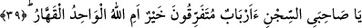

İbrahim, İshâk ve Yâkub’un fazîleti tüm dünyada meşhurdu. Bu sebeple kendisinin
bunların evlâdı olduğu anlaşılınca, ona tâzim ederek gözlerinde büyüttüler ve
söylediklerini benimsediler.
Bu yüzden bir âlimin ilimdeki derecesi bilinmediği zaman, tanınıp kendisinden
istifade edilmesini sağlamak maksadıyla kendisini tanıtması, özelliklerini belirtmesi
câiz görülmüştür.
Bir hadiste şöyle buyrulmuştur: “Şüphesiz Allah insana malının fazlasından soracağı
gibi ilminin fazlalığından da soracaktır.”[39]
Yûsuf (a.s.) atalarının dinine tâbi olduğunu zikretmeden önce kâfirlerin dinini terk
ettiğini ifade etmiştir. Çünkü tahliye -hı ile- (boşaltıp temizleme), tahliyeden -hâ ile-
(süslemeden) önce gelir.
Yûsuf’un sözünde tâbi olmanın kemâlatı kazanmak ve bütün istekleri elde etmek için
tevessül edilmesi gereken bir sebep olduğuna işaret edilmektedir.
Burada ayrıca İbrahim (a.s.)’ın dininin sır, İshâk’ın dininin hafâ gizlilik; Yâkub’un
dininin de rûh, tevhid ve marifet olduğuna işaret vardır.
Bırakın ne faydası ne de zararı bulunan donuk maddeleri, insan, cin ve melekleri,
hulâsa “Allah’a herhangi bir şeyi ortak koşmak” peygamberler olarak çok güçlü
nefislere ve geniş ilimlere sahip olduğumuz için “bize yaraşmaz.” Bu fiili irtikâb etmek
bir yana bizim için bunu düşünmek bile doğru ve mümkün olmaz.
“Allah’a herhangi bir şeyi ortak koşmak bize yaraşmaz.” ifadesinin delâlet ettiği
“Bu,” tevhid akidesi, “Allah’ın bize” vahiy yoluyla ve bütün “insanlara” da bizim
aracılığımız ve onları irşâd için gönderilmemiz vasıtasıyla “olan lütfundandır.” Çünkü
gözü görmeyen bir kimse için rehberlik eden birinin var olması Allah’ın bir rahmetidir.
Hem de ne rahmet! “Fakat” kendilerine peygamber gönderilen “insanların çoğu” buna
“şükretmezler” Tevhidden yüz çevirirler ve yaptıklarından vazgeçmezler.
Oysa gerek peygamberler gerekse kâmil veliler Allah Teâlâ ile yarattıkları arasında
vâsıta oldukları için kulluğun pekiştirilmesi ve hikmetin hakkının verilmesi bakımından
onlara teşekkür edilmesi gerekir.
39. “Ey benim zindan arkadaşlarım! Çeşitli tanrılar mı daha iyi, yoksa gücüne
karşı durulamaz olan bir tek Allah mı?”
“Ey benim zindan arkadaşlarım!” Yani, ey benim zindandaki arkadaşlarım! Yûsuf
(a.s.) mensûbu olduğu dosdoğru dini kendilerine açıklayınca gençlerin kavminin içinde
bulundukları putlara tapmaya dayalı dinin fâsid olduğuna delil getirme konusunda
yumuşak ifadeler kullandı. Sevginin hâlis, nasîhatin samîmî olduğu o zorlu ortamda
onlara “arkadaş” diye hitâb etti.